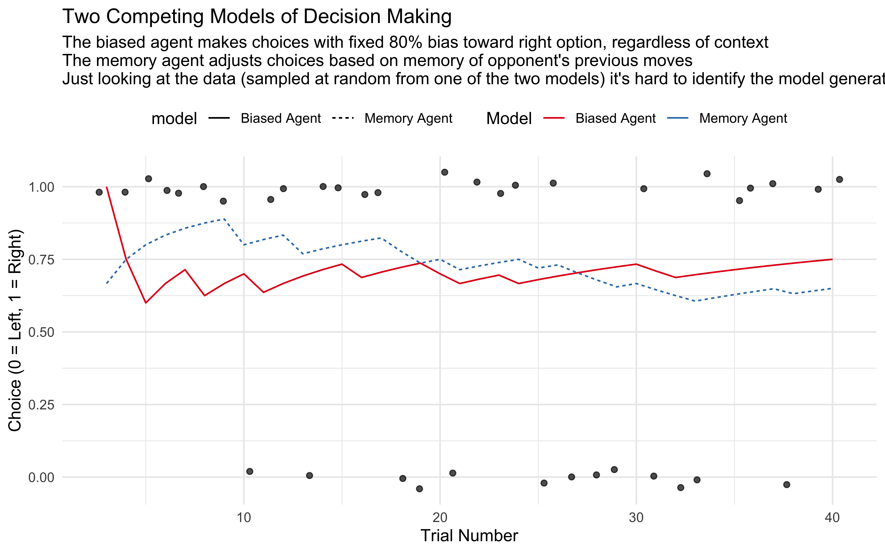

Chapter 8 Model Comparison in Cognitive Science
Cognitive science aims to understand the processes that give rise to human thought and behavior. To do this effectively, we often create formal models that represent our hypotheses about these underlying processes. However, human cognition is complex, and multiple theoretical accounts might plausibly explain the same observed behaviors. This is where model comparison becomes essential. Model comparison is the principled evaluation of competing models to determine which best explains observed data. Model comparison techniques as described here balance a model’s ability to fit existing data against its ability to generalize to new observations, helping us avoid the trap of overfitting. But remember, model comparison is not a fail-safe procedure to determine which model embodies the truth, as always we need to be careful, tentative and open about the probabilistic and fallible nature of our inference.
8.1 Learning Objectives
After completing this chapter, you will be able to:
Implement cross-validation techniques for comparing cognitive models using Stan
Calculate and interpret expected log predictive density (ELPD) scores
Assess model predictions through posterior and prior predictive checks
Understand the strengths and limitations of different model comparison approaches
Apply these techniques to compare competing cognitive models using real data
8.2 Why Compare Models?
Model comparison serves multiple purposes in cognitive science:
Theory Testing: Different models often represent competing theoretical accounts of cognitive processes. Comparing their fit to data helps evaluate these theories.
Parsimony: When multiple models can explain the data, more complex models should only be preferred if they are justified by better predictive performance.
Generalization: By assessing how well different models predict new data, we can evaluate their ability to capture general patterns rather than just fitting to specific samples.
Individual Differences: Model comparison can reveal whether different individuals or groups are better described by different cognitive strategies.
This chapter demonstrates these principles using our matching pennies models as concrete examples. We’ll compare simple random choice models against more sophisticated memory-based approaches, showing how to rigorously evaluate which better explains observed behavior.
8.2.1 The Challenge of Model Selection
Imagine having several models of what might be going on and wanting to know which is the best explanation of the data. For example:
- Are people more likely to use a memory strategy or a win-stay-lose-shift strategy?
- Are we justified in assuming that people react differently to losses than to wins?
- Would we be justified in assuming that capuchin monkeys and cognitive science students use the same model?
Model comparison defines a broad range of practices aimed at identifying the best model for a given dataset. What “best†means is, however, a non-trivial question. Ideally, “best†would mean the model describing the mechanism that actually generated the data. However, knowing the truth is a tricky proposition and we need to use proxies. There are many of such proxies in the literature, for instance Bayes Factors (see Nicenboim et al 2023, https://vasishth.github.io/bayescogsci/book/ch-comparison.html). In this course, we rely on predictive performance - this helps combat overfitting, but has limitations we’ll discuss at the end.
In other words, this chapter will assess models in terms of their (estimated) ability to predict new (test) data. Remember that predictive performance is a very useful tool, but not a magical solution. It allows us to combat overfitting to the training sample (your model snuggling to your data so much that it fits both signal and noise), but it has key limitations, which we will discuss at the end of the chapter.
To learn how to make model comparison, in this chapter, we rely on our usual simulation based approach to ensure that the method is doing what we want. We simulate the behavior of biased agents playing against the memory agents. This provides us with data generated according to two different mechanisms: biased agents and memory agents. We can fit both models separately on each of the two sets of agents, so we can compare the relative performance of the two models: can we identify the true model generating the data (in a setup where truth is known)? This is what is usually called “model recovery†and complements nicely “parameter recoveryâ€. In model recovery we assess whether we can identify the correct model, in parameter recovery we assess whether - once we know the correct model - we can identify the correct parameter values.
Let’s get going.
# Flag to control whether to regenerate simulations
# Set this to TRUE when you need to rerun the models
regenerate_simulations <- FALSE
# Load required packages
pacman::p_load(
tidyverse, # For data manipulation and visualization
here, # For file path management
posterior, # For working with posterior samples
cmdstanr, # For interfacing with Stan
brms, # For Bayesian regression models
tidybayes, # For working with Bayesian samples
loo, # For leave-one-out cross-validation
patchwork, # For combining plots
bayesplot, # For Bayesian visualization
MASS
)
# Set seed for reproducibility
set.seed(123)
# Generate demonstration data
trials <- 40
# Model 1: Random biased agent (80% right choice)
biased_agent <- rbinom(trials, 1, 0.8)
cumulative_biased <- cumsum(biased_agent) / seq_along(biased_agent)
# Model 2: Memory-based agent (adjusts based on past patterns)
memory_agent <- rep(NA, trials)
memory_agent[1] <- rbinom(1, 1, 0.5) # First choice is random
for (i in 2:trials) {
# Agent uses memory of past choices with some randomness
memory_agent[i] <- rbinom(1, 1, 0.3 + 0.4 * mean(biased_agent[1:(i - 1)]))
}
cumulative_memory <- cumsum(memory_agent) / seq_along(memory_agent)
# Create plotting data
model_data <- tibble(
trial = rep(1:trials, 2),
choice = c(biased_agent, memory_agent),
cumulative = c(cumulative_biased, cumulative_memory),
model = rep(c("Biased Agent", "Memory Agent"), each = trials)
)
# Generate simulated data that could come from either model
observed_data <- if (runif(1) > 0.5) biased_agent else memory_agent
observed_cumulative <- cumsum(observed_data) / seq_along(observed_data)
observed_df <- tibble(
trial = 1:trials,
choice = observed_data,
cumulative = observed_cumulative
)
# Create the plot
p1 <- ggplot() +
geom_jitter(data = observed_df %>% filter(trial > 2), aes(x = trial, y = choice), height = 0.05, alpha = 0.7, color = "black") +
geom_line(data = model_data %>% filter(trial > 2), aes(x = trial, y = cumulative, color = model, linetype = model)) +
scale_color_brewer(palette = "Set1") +
labs(
title = "Two Competing Models of Decision Making",
subtitle = "The biased agent makes choices with fixed 80% bias toward right option, regardless of context \nThe memory agent adjusts choices based on memory of opponent's previous moves \nJust looking at the data (sampled at random from one of the two models) it's hard to identify the model generating it",
x = "Trial Number",
y = "Choice (0 = Left, 1 = Right)",
color = "Model"
) +
theme_minimal() +
theme(legend.position = "top")
p1 
In this example, we have:
Model 1 (Biased Agent): Makes choices with a consistent 80% bias toward the right option
Model 2 (Memory Agent): Adjusts choices based on memory of previous patterns
The critical insight is that both models can produce similar-looking data, making it difficult to determine which cognitive process generated the observed behavior by simple visual inspection. Formal model comparison techniques give us principled ways to evaluate which model better explains the data while accounting for model complexity and generalization ability.
8.3 Cross-Validation: The Foundation of Model Comparison
Cross-validation is a fundamental technique for comparing models based on their predictive performance. The core idea is simple: a good model should not only fit the observed data but also generalize well to new, unseen data.
8.3.1 The Problem of Overfitting
When we fit a model to data, there’s always a risk of overfitting - capturing noise or idiosyncrasies in the particular sample rather than the underlying pattern we care about.
[MISSING: A QUICK ILLUSTRATION OF AN EXAMPLE]
Cross-validation helps us find the optimal balance between fitting the training data and generalizing to new data.
When the datasets are small, as it is often the case in cognitive science, keeping a substantial portion of the data out - substantial enough to be representative of a more general population - is problematic as it risks starving the model of data: there might not be enough data for reliable estimation of the parameter values. This is where the notion of cross-validation comes in: we can split the dataset in k folds, let’s say k = 10. Then each fold is in turn kept aside as validation set, the model is fitted on the other folds, and its predictive performance tested on the validation set. Repeat this operation of each of the folds. This operation ensures that all the data can be used for training as well as for validation, and is in its own terms quite genial. However, this does not mean it is free of shortcomings. First, small validation folds might not be representative of the diversity of true out-of-sample populations - and there is a tendency to set k equal to the number of datapoints (leave-one-out cross validation). Second, there are many ways in which information could leak or contaminate across folds if the pipeline is not very careful (e.g. via data preprocessing scaling the full dataset, or hyper-parameter estimation). Third, and crucial for our case here, cross validation implies refitting the model k times, which for Bayesian models might be very cumbersome (I once had a model that took 6 weeks to run).
8.3.2 How Cross-Validation Works
The basic idea of cross-validation is to:
- Split your data into training and test sets
- Fit your model to the training data
- Evaluate the model’s performance on the test data (which it hasn’t seen during training)
- Repeat with different training/test splits and average the results
There are several variations of cross-validation:
8.3.2.1 K-Fold Cross-Validation
In k-fold cross-validation, we: 1. Divide the data into k equally sized subsets (folds) 2. Use k-1 folds for training and the remaining fold for testing 3. Repeat k times, each time using a different fold as the test set 4. Average the k test performance metrics
This visualization shows how 5-fold cross-validation works:
# Visualization of k-fold cross-validation
set.seed(123)
n_data <- 20
# K-Fold CV (k=5)
cv_data <- tibble(
index = 1:n_data,
value = rnorm(n_data)
)
set.seed(456)
cv_data$fold <- sample(rep(1:5, length.out = n_data))
# Create visualization data for k-fold CV
cv_viz_data <- tibble(
iteration = rep(1:5, each = n_data),
data_point = rep(1:n_data, 5),
role = ifelse(cv_data$fold[data_point] == iteration, "test", "train"),
approach = "5-Fold CV"
)
# Define a consistent color scheme
role_colors <- c("train" = "steelblue", "test" = "firebrick")
# Create the plot
ggplot(cv_viz_data, aes(x = data_point, y = iteration, fill = role)) +
geom_tile(color = "white", size = 0.5) +
scale_fill_manual(values = role_colors, name = "Data Role") +
labs(
title = "K-Fold Cross-Validation (k=5)",
subtitle = "Each row shows one iteration, columns represent data points",
x = "Data Point",
y = "Iteration",
fill = "Data Usage"
) +
theme_minimal() +
theme(
panel.grid = element_blank(),
legend.position = "bottom"
)
8.3.2.2 Leave-One-Out Cross-Validation (LOO-CV)
Leave-one-out is a special case of k-fold cross-validation where k equals the number of data points. In each iteration, we: 1. Hold out a single observation for testing 2. Train on all other observations 3. Repeat for every observation 4. Average the performance metrics
This approach can be very computationally intensive for large datasets or complex models.
# Create visualization data for LOO CV
loo_viz_data <- tibble(
iteration = rep(1:n_data, each = n_data),
data_point = rep(1:n_data, n_data),
role = ifelse(iteration == data_point, "test", "train"),
approach = "LOO CV"
)
# Create the plot
ggplot(loo_viz_data, aes(x = data_point, y = iteration, fill = role)) +
geom_tile(color = "white", size = 0.5) +
scale_fill_manual(values = role_colors, name = "Data Role") +
labs(
title = "Leave-One-Out Cross-Validation",
subtitle = "Each row shows one iteration, columns represent data points",
x = "Data Point",
y = "Iteration",
fill = "Data Usage"
) +
theme_minimal() +
theme(
panel.grid = element_blank(),
legend.position = "bottom"
)
8.3.3 Cross-Validation in Bayesian Models
Cross-validation is especially important in Bayesian modeling for several reasons:
- Bayesian models can be highly parameterized and prone to overfitting
- Prior choices can significantly influence model performance
- The complexity of hierarchical structures needs careful validation
- We often need to compare competing theoretical accounts
However, cross-validation for Bayesian models presents two key challenges:
Computational cost: Bayesian models fitted with MCMC can take hours or days to run, making it impractical to refit them k times for cross-validation
Proper scoring: We need appropriate metrics for evaluating predictive performance in a Bayesian framework
Next, we’ll see how these challenges are addressed.
8.3.4 Expected Log Predictive Density (ELPD)
When comparing Bayesian models, we use the expected log predictive density (ELPD) as our metric. This measures how well the model predicts new data points on the log scale.
For a single observation, the log predictive density is:
\[\log p(y_i | y_{-i})\]
where \(y_i\) is the observation we’re trying to predict, and \(y_{-i}\) represents all other observations that were used for training.
For the entire dataset, we sum across all observations:
\[\text{ELPD} = \sum_{i=1}^{n} \log p(y_i | y_{-i})\]
The ELPD has several desirable properties:
- It accounts for the full predictive distribution, not just point estimates
- It automatically penalizes overconfident models
- Higher values indicate better predictive performance
Computing the ELPD exactly requires fitting the model n times (for n data points), which brings us back to the computational challenge.
8.4 PSIS-LOO: An Efficient Approximation to LOO-CV
For complex Bayesian models, true leave-one-out cross-validation (LOO-CV) is often computationally infeasible. Pareto-smoothed importance sampling leave-one-out cross-validation (PSIS-LOO) provides an elegant solution by approximating LOO-CV using just a single model fit.
8.4.1 How Importance Sampling Works
When we fit a Bayesian model, we obtain samples from the posterior distribution \(p(\theta|y_1,...,y_n)\) - the distribution of model parameters given all observations. For LOO-CV, we need \(p(\theta|y_1,...,y_{i-1},y_{i+1},...,y_n)\) - the distribution without the i-th observation.
Importance sampling bridges this gap by reweighting the full posterior samples to approximate the LOO posterior. The importance weights for the i-th observation are:
\[w_i(\theta) = \frac{p(\theta|y_1,...,y_{i-1},y_{i+1},...,y_n)}{p(\theta|y_1,...,y_n)} \propto \frac{1}{p(y_i|\theta)}\]
By Bayes’ theorem, this simplifies to:
w_i(θ) ∠1 / p(yᵢ|θ)
These weights effectively “undo†the influence of the i-th observation on the posterior.
However, standard importance sampling can be unstable when: * The full posterior and LOO posterior differ substantially * Some importance weights become extremely large * The variance of the weights is high
8.4.2 Pareto Smoothing for Stability
Pareto smoothing improves the reliability of importance sampling:
- Fit a generalized Pareto distribution to the largest importance weights
- Replace the largest weights with values from this smoothed distribution
- Use the modified weights for more stable LOO estimation
The diagnostic parameter k from the Pareto fit helps assess reliability: * k < 0.5: Reliable estimation * 0.5 < k < 0.7: Somewhat reliable, proceed with caution * k > 0.7: Unreliable, consider using other methods for this observation
These diagnostics help identify problematic observations that might require more attention or alternative methods.
8.4.3 The Complete PSIS-LOO Process
The full PSIS-LOO method follows these steps:
Fit the Bayesian model once to all available data
For each observation i:
Calculate raw importance weights using the log-likelihood: w_i(θ) ∠1/p(yᵢ|θ)
Apply Pareto smoothing to stabilize the largest weights
Normalize the smoothed weights
Use the weights to compute the expected log predictive density (ELPD)
Sum the individual ELPD contributions to get the overall PSIS-LOO estimate
[I NEED TO FIND A BETTER WAY TO EXPLAIN AND VISUALIZE!]
# Create improved visualizations of PSIS-LOO
set.seed(789)
# Generate some sample data
n <- 50
x <- seq(-3, 3, length.out = n)
y_true <- 2 + 1.5 * x + 0.5 * x^2
y <- y_true + rnorm(n, 0, 2)
data <- data.frame(x = x, y = y)
# Fit a simple model to all data (this will be our "Bayesian model")
full_model <- lm(y ~ x + I(x^2))
full_predictions <- predict(full_model)
# Generate posterior samples (simplified for illustration)
n_samples <- 1000
beta_samples <- mvrnorm(n_samples,
coef(full_model),
vcov(full_model))
sigma_samples <- rep(sigma(full_model), n_samples)
# Function to compute log-likelihood for each observation given parameters
log_lik <- function(beta, sigma, x, y) {
mu <- beta[1] + beta[2] * x + beta[3] * x^2
dnorm(y, mean = mu, sd = sigma, log = TRUE)
}
# Compute log-likelihood matrix (n_samples × n_observations)
log_lik_matrix <- matrix(NA, nrow = n_samples, ncol = n)
for (i in 1:n_samples) {
for (j in 1:n) {
log_lik_matrix[i, j] <- log_lik(beta_samples[i,], sigma_samples[i], x[j], y[j])
}
}
# Select a point for demonstration
loo_idx <- 25 # This will be our "left out" point
# Calculate raw importance weights for the selected point
log_weights <- -log_lik_matrix[, loo_idx] # Negative log-likelihood
weights <- exp(log_weights - max(log_weights)) # Stabilize by subtracting max
# Function to simulate Pareto smoothing (simplified)
pareto_smooth <- function(weights) {
# Sort weights
sorted_weights <- sort(weights, decreasing = TRUE)
n_tail <- min(500, length(weights) / 5) # Top 20% or 500, whichever is smaller
# Fit generalized Pareto to the tail (simplified)
# In practice, actual fitting would be used
k <- 0.4 # Simulated Pareto shape parameter
sigma <- mean(sorted_weights[1:n_tail]) * 0.8
# Smooth the tail weights
for (i in 1:n_tail) {
q <- (i - 0.5) / n_tail
sorted_weights[i] <- sigma/k * ((1 - q)^(-k) - 1)
}
# Rearrange to original order
smoothed_weights <- weights
smoothed_weights[order(weights, decreasing = TRUE)[1:n_tail]] <- sorted_weights[1:n_tail]
return(smoothed_weights)
}
# Apply simulated Pareto smoothing
smoothed_weights <- pareto_smooth(weights)
# Normalize weights
raw_norm_weights <- weights / sum(weights)
smoothed_norm_weights <- smoothed_weights / sum(smoothed_weights)
# Calculate true LOO prediction for comparison
loo_model <- lm(y[-loo_idx] ~ x[-loo_idx] + I(x[-loo_idx]^2))
loo_prediction <- predict(loo_model, newdata = data.frame(x = x[loo_idx]))
# Calculate PSIS-LOO prediction for the point
psis_prediction <- 0
for (i in 1:n_samples) {
beta <- beta_samples[i,]
psis_prediction <- psis_prediction + smoothed_norm_weights[i] *
(beta[1] + beta[2] * x[loo_idx] + beta[3] * x[loo_idx]^2)
}
# Create visualization data
viz_data <- data.frame(
x = x,
y = y,
full_fit = full_predictions,
highlighted = ifelse(seq_along(x) == loo_idx, "Point Left Out", "Other Points")
)
# Sample subset for posterior draws
sample_indices <- sample(1:n_samples, 50)
posterior_lines <- data.frame(
x = rep(x, length(sample_indices)),
sample = rep(1:length(sample_indices), each = n),
y_pred = NA
)
for (i in 1:length(sample_indices)) {
s <- sample_indices[i]
beta <- beta_samples[s,]
posterior_lines$y_pred[posterior_lines$sample == i] <-
beta[1] + beta[2] * x + beta[3] * x^2
}
# Create data for weight visualization
weight_data <- data.frame(
weight_idx = 1:100, # Show only first 100 weights for clarity
raw_weight = raw_norm_weights[1:100],
smoothed_weight = smoothed_norm_weights[1:100]
)
# PLOT 1: Data and model fit
p1 <- ggplot(viz_data, aes(x = x, y = y)) +
# Add posterior draws
geom_line(data = posterior_lines, aes(y = y_pred, group = sample),
alpha = 0.1, color = "blue") +
# Add full model fit
geom_line(aes(y = full_fit), color = "blue", size = 1) +
# Add data points
geom_point(aes(color = highlighted, size = highlighted), alpha = 0.7) +
# Add predictions for the left-out point
geom_segment(
aes(x = x[loo_idx], y = y[loo_idx], xend = x[loo_idx], yend = loo_prediction),
arrow = arrow(length = unit(0.3, "cm")), color = "red", linetype = "dashed"
) +
# Add the true LOO prediction point
geom_point(
aes(x = x[loo_idx], y = loo_prediction),
color = "red", size = 4, shape = 18
) +
geom_segment(
aes(x = x[loo_idx] + 0.1, y = y[loo_idx], xend = x[loo_idx] + 0.1, yend = psis_prediction),
arrow = arrow(length = unit(0.3, "cm")), color = "purple", linetype = "dashed"
) +
# Add the PSIS-LOO prediction point
geom_point(
aes(x = x[loo_idx] + 0.1, y = psis_prediction),
color = "purple", size = 4, shape = 18
) +
# Add legend annotations
annotate("text", x = x[loo_idx] - 0.3, y = (y[loo_idx] + loo_prediction)/2,
label = "True LOO", color = "red", hjust = 1) +
annotate("text", x = x[loo_idx] + 0.4, y = (y[loo_idx] + psis_prediction)/2,
label = "PSIS-LOO", color = "purple", hjust = 0) +
# Styling
scale_color_manual(values = c("Other Points" = "black", "Point Left Out" = "red")) +
scale_size_manual(values = c("Other Points" = 2, "Point Left Out" = 3)) +
labs(
title = "PSIS-LOO Approximation of Leave-One-Out Cross-Validation",
subtitle = "Comparing true LOO (red) vs. PSIS-LOO approximation (purple)",
x = "x",
y = "y",
color = NULL,
size = NULL
) +
theme_minimal() +
theme(legend.position = "bottom")
# PLOT 2: Importance weights before and after Pareto smoothing
p2 <- ggplot(weight_data, aes(x = weight_idx)) +
# Raw weights
geom_segment(aes(xend = weight_idx, y = 0, yend = raw_weight),
color = "gray50", alpha = 0.7) +
geom_point(aes(y = raw_weight), color = "blue", size = 2, alpha = 0.7) +
# Smoothed weights
geom_segment(aes(xend = weight_idx, y = 0, yend = smoothed_weight),
color = "gray50", alpha = 0.7) +
geom_point(aes(y = smoothed_weight), color = "purple", size = 2, alpha = 0.7) +
# Connect raw and smoothed weights for visual clarity
geom_segment(aes(xend = weight_idx, y = raw_weight, yend = smoothed_weight),
arrow = arrow(length = unit(0.1, "cm")),
color = "purple", alpha = 0.3) +
# Styling
labs(
title = "Importance Sampling Weights for PSIS-LOO",
subtitle = "Pareto smoothing stabilizes extreme weights (arrows show the adjustment)",
x = "Sample Index (ordered by weight)",
y = "Normalized Weight"
) +
scale_x_continuous(breaks = seq(0, 100, by = 20)) +
theme_minimal() +
annotate("text", x = 20, y = max(weight_data$raw_weight) * 0.9,
label = "Before smoothing", color = "blue", hjust = 0) +
annotate("text", x = 60, y = max(weight_data$smoothed_weight) * 0.9,
label = "After Pareto smoothing", color = "purple", hjust = 0)
# PLOT 3: Conceptual diagram of PSIS-LOO process
p3 <- ggplot() +
# Add process steps
annotate("rect", xmin = 0.5, xmax = 3.5, ymin = 4, ymax = 5,
fill = "lightblue", alpha = 0.7, color = "black") +
annotate("text", x = 2, y = 4.5,
label = "1. Fit Model to All Data\nObtain posterior samples p(θ|y₁,...,yₙ)") +
annotate("rect", xmin = 0.5, xmax = 3.5, ymin = 2.5, ymax = 3.5,
fill = "lightgreen", alpha = 0.7, color = "black") +
annotate("text", x = 2, y = 3,
label = "2. Calculate Log-Likelihood for Each Observation\nℓᵢ(θ) = log p(yᵢ|θ)") +
annotate("rect", xmin = 0.5, xmax = 3.5, ymin = 1, ymax = 2,
fill = "lightyellow", alpha = 0.7, color = "black") +
annotate("text", x = 2, y = 1.5,
label = "3. Compute Importance Weights\nwᵢ(θ) ∠1/p(yᵢ|θ)") +
annotate("rect", xmin = 0.5, xmax = 3.5, ymin = -0.5, ymax = 0.5,
fill = "mistyrose", alpha = 0.7, color = "black") +
annotate("text", x = 2, y = 0,
label = "4. Apply Pareto Smoothing\nStabilize extreme weights") +
annotate("rect", xmin = 0.5, xmax = 3.5, ymin = -2, ymax = -1,
fill = "lavender", alpha = 0.7, color = "black") +
annotate("text", x = 2, y = -1.5,
label = "5. Compute ELPD Using Smoothed Weights\nApproximate leave-one-out prediction") +
# Add arrows
annotate("segment", x = 2, y = 4, xend = 2, yend = 3.5,
arrow = arrow(length = unit(0.2, "cm"))) +
annotate("segment", x = 2, y = 2.5, xend = 2, yend = 2,
arrow = arrow(length = unit(0.2, "cm"))) +
annotate("segment", x = 2, y = 1, xend = 2, yend = 0.5,
arrow = arrow(length = unit(0.2, "cm"))) +
annotate("segment", x = 2, y = -0.5, xend = 2, yend = -1,
arrow = arrow(length = unit(0.2, "cm"))) +
# Explain the advantage
annotate("text", x = 2, y = -2.7,
label = "PSIS-LOO provides accurate LOO approximation\nfrom a single model fit",
fontface = "italic") +
# Add Pareto k value diagnostic information
annotate("rect", xmin = 3.7, xmax = 5.7, ymin = -0.2, ymax = 1.5,
fill = "white", alpha = 0.8, color = "black", linetype = "dashed") +
annotate("text", x = 4.7, y = 1.2, label = "Pareto k Diagnostics", fontface = "bold") +
annotate("text", x = 4.7, y = 0.8, label = "k < 0.5: Reliable", color = "darkgreen") +
annotate("text", x = 4.7, y = 0.4, label = "0.5 < k < 0.7: Use caution", color = "darkorange") +
annotate("text", x = 4.7, y = 0, label = "k > 0.7: Unreliable", color = "darkred") +
# Styling
theme_void() +
labs(title = "PSIS-LOO Process Flow")
# Arrange the plots in a grid
p1 / p2 

The red circle represents our “left-out†data point, while the blue line shows the model fit using all data points (including that red circle). The red diamond shows the prediction we get when we actually refit the model without the red circle.
When we fit a model (the blue line), each data point “pulls†the model fit toward itself to some degree. The red circle data point influenced the original model to bend slightly closer to it. This is why the red circle appears relatively close to the blue line—it helped shape that line!
When we perform true leave-one-out cross-validation, we remove that red circle point completely and refit the model using only the remaining data. Without the “pull†from that point, the model (which we don’t directly show) follows a slightly different path determined solely by the other points. The prediction from this new model (the red diamond) naturally lands in a different position.
This difference between the original model prediction and the leave-one-out prediction is exactly what makes cross-validation valuable:
It reveals how much individual data points influence your model
It gives a more honest assessment of how your model will perform on truly unseen data
Large differences can help identify influential or outlier points
The purple diamond (PSIS-LOO prediction) attempts to approximate where that red diamond would be without actually refitting the model, by mathematically down-weighting the influence of the left-out point—which is why it’s positioned close to the red diamond if the approximation is working well.
8.5 Simulation-Based Model Comparison
Now that we understand the principles, let’s apply these techniques to compare cognitive models using a simulation-based approach. This approach has two key advantages:
- We know the “ground truth†(which model generated each dataset)
- We can systematically test if our comparison methods work
We’ll simulate data from two different model types:
- Biased agents: Make choices based on a fixed bias parameter
- Memory agents: Make choices influenced by the history of their opponent’s actions
By fitting both models to data generated from each type of agent, we can evaluate whether our model comparison techniques correctly identify the true generating model.
8.5.1 Define Simulation Parameters
# Shared parameters
agents <- 100 # Number of agents to simulate
trials <- 120 # Number of trials per agent
noise <- 0 # Base noise level (probability of random choice)
# Biased agents parameters (on log-odds scale)
rateM <- 1.386 # Population mean of bias (~0.8 in probability space)
rateSD <- 0.65 # Population SD of bias (~0.1 in probability space)
# Memory agents parameters
biasM <- 0 # Population mean of baseline bias
biasSD <- 0.1 # Population SD of baseline bias
betaM <- 1.5 # Population mean of memory sensitivity
betaSD <- 0.3 # Population SD of memory sensitivity
# Print the parameters in probability space for easier interpretation
cat("Biased agents have mean choice probability of:", round(plogis(rateM), 2), "\n")## Biased agents have mean choice probability of: 0.8## Memory agents have mean baseline bias of: 0.5## Memory agents have mean sensitivity to opponent's history of: 1.58.5.2 Define Agent Functions
# Random agent function: makes choices based on bias parameter
RandomAgentNoise_f <- function(rate, noise) {
# Generate choice based on agent's bias parameter (on log-odds scale)
choice <- rbinom(1, 1, plogis(rate))
# With probability 'noise', override choice with random 50/50 selection
if (rbinom(1, 1, noise) == 1) {
choice = rbinom(1, 1, 0.5)
}
return(choice)
}
# Memory agent function: makes choices based on opponent's historical choices
MemoryAgentNoise_f <- function(bias, beta, otherRate, noise) {
# Calculate log-odds of choosing option 1, influenced by opponent's historical choice rate
log_odds <- bias + beta * qlogis(otherRate)
# Convert to probability and generate choice
choice <- rbinom(1, 1, plogis(log_odds))
# With probability 'noise', override choice with random 50/50 selection
if (rbinom(1, 1, noise) == 1) {
choice = rbinom(1, 1, 0.5)
}
return(choice)
}8.5.3 Generate Simulation Data
# Function to simulate one run of agents playing against each other
simulate_agents <- function() {
# Create empty dataframe to store results
d <- NULL
# Loop through all agents
for (agent in 1:agents) {
# Sample individual agent parameters from population distributions
rate <- rnorm(1, rateM, rateSD) # Individual bias for random agent
bias <- rnorm(1, biasM, biasSD) # Individual baseline bias for memory agent
beta <- rnorm(1, betaM, betaSD) # Individual memory sensitivity
# Initialize choice vectors
randomChoice <- rep(NA, trials)
memoryChoice <- rep(NA, trials)
memoryRate <- rep(NA, trials)
# Generate choices for each trial
for (trial in 1:trials) {
# Random (biased) agent makes choice
randomChoice[trial] <- RandomAgentNoise_f(rate, noise)
# Memory agent responds (with no history for first trial)
if (trial == 1) {
memoryChoice[trial] <- rbinom(1, 1, 0.5) # First choice is random
} else {
# Use mean of random agent's previous choices as "memory"
memoryChoice[trial] <- MemoryAgentNoise_f(
bias, beta, mean(randomChoice[1:(trial - 1)], na.rm = TRUE), noise
)
}
}
# Create data frame for this agent
temp <- tibble(
agent = agent,
trial = seq(trials),
randomChoice = randomChoice,
randomRate = rate,
memoryChoice = memoryChoice,
noise = noise,
rateM = rateM,
rateSD = rateSD,
bias = bias,
beta = beta,
biasM = biasM,
biasSD = biasSD,
betaM = betaM,
betaSD = betaSD
)
# Append to main dataframe
if (agent > 1) {
d <- rbind(d, temp)
} else {
d <- temp
}
}
# Calculate cumulative choice rates
d <- d %>% group_by(agent) %>% mutate(
randomRate_cumulative = cumsum(randomChoice) / seq_along(randomChoice),
memoryRate_cumulative = cumsum(memoryChoice) / seq_along(memoryChoice)
)
return(d)
}
# Generate the data
d <- simulate_agents()
# Show a quick summary of the generated data
summary_stats <- d %>%
filter(trial == trials) %>% # Get final trial stats
summarize(
mean_random_rate = mean(randomRate_cumulative),
mean_memory_rate = mean(memoryRate_cumulative)
)
print(summary_stats)## # A tibble: 100 × 3
## agent mean_random_rate mean_memory_rate
## <int> <dbl> <dbl>
## 1 1 0.892 0.833
## 2 2 0.775 0.883
## 3 3 0.917 0.958
## 4 4 0.883 0.992
## 5 5 0.783 0.692
## 6 6 0.825 0.867
## 7 7 0.875 0.983
## 8 8 0.842 0.925
## 9 9 0.608 0.608
## 10 10 0.875 0.975
## # ℹ 90 more rows8.5.4 Visualize the Simulation Data
# Select a random sample of agents to visualize
sample_agents <- sample(unique(d$agent), 6)
# Filter data for these agents
sample_data <- d %>% filter(agent %in% sample_agents)
# Create plot showing choice patterns
p1 <- ggplot(sample_data, aes(x = trial)) +
geom_line(aes(y = randomRate_cumulative, color = "Biased Agent"), size = 1) +
geom_line(aes(y = memoryRate_cumulative, color = "Memory Agent"), size = 1) +
geom_hline(yintercept = 0.5, linetype = "dashed", color = "gray50") +
facet_wrap(~agent, ncol = 3) +
scale_color_brewer(palette = "Set1") +
labs(
title = "Choice Patterns of Biased vs. Memory Agents",
subtitle = "Lines show cumulative proportion of 'right' choices",
x = "Trial",
y = "Cumulative Proportion Right Choices",
color = "Agent Type"
) +
theme_minimal() +
theme(legend.position = "bottom")
# Create density plot of final choice rates
p2 <- d %>%
filter(trial == trials) %>%
dplyr::select(agent, randomRate_cumulative, memoryRate_cumulative) %>%
pivot_longer(cols = c(randomRate_cumulative, memoryRate_cumulative),
names_to = "agent_type", values_to = "rate") %>%
mutate(agent_type = ifelse(agent_type == "randomRate_cumulative",
"Biased Agent", "Memory Agent")) %>%
ggplot(aes(x = rate, fill = agent_type)) +
geom_density(alpha = 0.5) +
scale_fill_brewer(palette = "Set1") +
labs(
title = "Distribution of Final Choice Rates",
subtitle = "After 120 trials",
x = "Proportion of Right Choices",
y = "Density",
fill = "Agent Type"
) +
theme_minimal() +
theme(legend.position = "bottom")
# Combine the plots
p1 / p2 + plot_layout(heights = c(2, 1))
8.5.5 Prepare Data for Stan Models
# Prepare the data for the biased agent model
d_random <- d %>%
dplyr::select(agent, randomChoice) %>%
mutate(row = row_number()) %>%
pivot_wider(names_from = agent, values_from = randomChoice)
d_memory <- d %>%
dplyr::select(agent, memoryChoice) %>%
mutate(row = row_number()) %>%
pivot_wider(names_from = agent, values_from = memoryChoice)
# Create data lists for Stan
data_biased <- list(
trials = trials,
agents = agents,
h = as.matrix(d_random[, 2:(agents + 1)]), # Matrix where columns are agents, rows are trials
other = as.matrix(d_memory[, 2:(agents + 1)]) # Other agent's choices (for memory model)
)
data_memory <- list(
trials = trials,
agents = agents,
h = as.matrix(d_memory[, 2:(agents + 1)]), # For memory agent model, we'll predict memory choices
other = as.matrix(d_random[, 2:(agents + 1)]) # And use random agent choices as input
)
# Show dimensions of the data matrices
cat("Dimensions of data matrices for biased agent model:\n")## Dimensions of data matrices for biased agent model:## h matrix: 120 100## other matrix: 120 100## Dimensions of data matrices for memory agent model:## h matrix: 120 100## other matrix: 120 1008.6 Implementing Models for Comparison
Now we need to implement our two competing models in Stan. Both will be multilevel (hierarchical) to account for individual differences among agents. The key feature for model comparison is that we’ll include a log_lik calculation in the generated quantities block of each model.
8.6.1 Understanding Log-Likelihood in Model Comparison
When comparing models, we need a way to quantify how well each model explains the observed data. The log-likelihood represents the logarithm of the probability that a model would generate the observed data given specific parameter values.
Given certain values for our parameters (let’s say a bias of 0 and beta for memory of 1) and for our variables (let’s say the vector of memory values estimated by the agent on a trial by trial basis), the model will predict a certain distribution of outcomes, that is, a certain distribution of choices (n times right, m times left hand). Comparing this to the actual data, we can identify how likely the model is to produce it. In other words, the probability that the model will actually generate the data we observed out of all its possible outcomes. Remember that we are doing Bayesian statistics, so this probability needs to be combined with the probability of the parameter values given the priors on those parameters. This would give us a posterior likelihood of the model’s parameter values given the data. The last step is that we need to work on a log scale. Working on a log scale is very useful because it avoids low probabilities (close to 0) being rounded down to exactly 0. By log-transforming the posterior likelihood, we now have the log-posterior likelihood.
Now, remember that our agent’s memory varies on a trial by trial level. In other words, for each data point, for each agent we can calculate separate values of log-posterior likelihood for each of the possible values of the parameters. That is, we can have a distribution of log-posterior likelihood for each data point.
Telling Stan to calculate these distributions is straightforward: we add to the generated quantities block the same log probability statements used in the model block, but save them to variables instead of adding them to the target.
N.B. Some of you might be wandering: if Stan is already using the log-posterior probability in the sampling process, why do we need to tell it to calculate and save it? Fair enough point. But Stan does not save by default (to avoid clogging your computer with endless data) and we need the log posterior likelihood saved as “log_lik†in order to be able to use more automated functions later on.
8.6.2 Multilevel Biased Agent Model
Here’s the Stan model for the biased agent (remember that we will add the log_lik part in the generated quantities block!).
# Stan model for multilevel biased agent
stan_biased_model <- "
// Multilevel Biased Agent Model
//
// This model assumes each agent has a fixed bias (theta) that determines
// their probability of choosing option 1 ('right')
functions{
// Helper function for generating truncated normal random numbers
real normal_lb_rng(real mu, real sigma, real lb) {
real p = normal_cdf(lb | mu, sigma); // CDF for bounds
real u = uniform_rng(p, 1);
return (sigma * inv_Phi(u)) + mu; // Inverse CDF for value
}
}
// Input data
data {
int<lower = 1> trials; // Number of trials per agent
int<lower = 1> agents; // Number of agents
array[trials, agents] int h; // Choice data (0/1 for each trial and agent)
}
// Parameters to be estimated
parameters {
real thetaM; // Population mean of bias (log-odds scale)
real<lower = 0> thetaSD; // Population SD of bias
array[agents] real theta; // Individual agent biases (log-odds scale)
}
// Model definition
model {
// Population-level priors
target += normal_lpdf(thetaM | 0, 1);
// Prior for SD with lower bound at zero (half-normal)
target += normal_lpdf(thetaSD | 0, .3) - normal_lccdf(0 | 0, .3);
// Individual-level parameters drawn from population distribution
target += normal_lpdf(theta | thetaM, thetaSD);
// Likelihood: predict each agent's choices
for (i in 1:agents)
target += bernoulli_logit_lpmf(h[,i] | theta[i]);
}
// Additional quantities to calculate
generated quantities{
// Prior predictive samples
real thetaM_prior;
real<lower=0> thetaSD_prior;
real<lower=0, upper=1> theta_prior;
real<lower=0, upper=1> theta_posterior;
// Posterior predictive samples
int<lower=0, upper = trials> prior_preds;
int<lower=0, upper = trials> posterior_preds;
// Log-likelihood for each observation (crucial for model comparison)
array[trials, agents] real log_lik;
// Generate prior samples
thetaM_prior = normal_rng(0, 1);
thetaSD_prior = normal_lb_rng(0, 0.3, 0);
theta_prior = inv_logit(normal_rng(thetaM_prior, thetaSD_prior));
theta_posterior = inv_logit(normal_rng(thetaM, thetaSD));
// Generate predictions from prior and posterior
prior_preds = binomial_rng(trials, inv_logit(thetaM_prior));
posterior_preds = binomial_rng(trials, inv_logit(thetaM));
// Calculate log-likelihood for each observation
for (i in 1:agents){
for (t in 1:trials){
log_lik[t, i] = bernoulli_logit_lpmf(h[t, i] | theta[i]);
}
}
}
"
# Write the Stan model to a file
write_stan_file(
stan_biased_model,
dir = "stan/",
basename = "W7_MultilevelBias.stan"
)## [1] "/Users/au209589/Dropbox/Teaching/AdvancedCognitiveModeling23_book/stan/W7_MultilevelBias.stan"# Compile the model
file <- file.path("stan/W7_MultilevelBias.stan")
mod_biased <- cmdstan_model(
file,
cpp_options = list(stan_threads = TRUE),
stanc_options = list("O1")
)Let’s break down this Stan model:
Data Block: Defines the input data - number of trials, number of agents, and the choice data matrix. Parameters Block: Specifies the parameters we want to estimate:
thetaM: The population mean bias
thetaSD: The population standard deviation of bias
theta: Individual bias parameters for each agent
Model Block: Defines the prior distributions and likelihood function:
Priors for population parameters
Individual parameters drawn from the population distribution
Likelihood of observing the choice data given the parameters
Generated Quantities Block: Calculates additional quantities of interest:
Prior and posterior predictive samples
Log-likelihood for each observation - this is crucial for model comparison
The most important part for model comparison is the log_lik calculation in the generated quantities block. This computes the log probability of each observation given the model and its parameters, which we’ll use for comparing models.
8.6.3 Multilevel Memory Agent Model
Now let’s implement our second model - the memory agent model:
# Stan model for multilevel memory agent
stan_memory_model <- "
// Multilevel Memory Agent Model
//
// This model assumes agents make choices based on their memory of
// the opponent's previous choices.
functions{
// Helper function for generating truncated normal random numbers
real normal_lb_rng(real mu, real sigma, real lb) {
real p = normal_cdf(lb | mu, sigma); // CDF for bounds
real u = uniform_rng(p, 1);
return (sigma * inv_Phi(u)) + mu; // Inverse CDF for value
}
}
// Input data
data {
int<lower = 1> trials; // Number of trials per agent
int<lower = 1> agents; // Number of agents
array[trials, agents] int h; // Choice data (0/1 for each trial and agent)
array[trials, agents] int other;// Opponent's choices (input to memory)
}
// Parameters to be estimated
parameters {
real biasM; // Population mean baseline bias
real betaM; // Population mean memory sensitivity
vector<lower = 0>[2] tau; // Population SDs for bias and beta
matrix[2, agents] z_IDs; // Standardized individual parameters (non-centered)
cholesky_factor_corr[2] L_u; // Cholesky factor of correlation matrix
}
// Transformed parameters (derived quantities)
transformed parameters {
// Memory state for each agent and trial
array[trials, agents] real memory;
// Individual parameters (bias and beta for each agent)
matrix[agents, 2] IDs;
// Transform standardized parameters to actual parameters (non-centered parameterization)
IDs = (diag_pre_multiply(tau, L_u) * z_IDs)';
// Calculate memory states based on opponent's choices
for (agent in 1:agents){
for (trial in 1:trials){
// Initialize first trial with neutral memory
if (trial == 1) {
memory[trial, agent] = 0.5;
}
// Update memory based on opponent's choices
if (trial < trials){
// Simple averaging memory update
memory[trial + 1, agent] = memory[trial, agent] +
((other[trial, agent] - memory[trial, agent]) / trial);
// Handle edge cases to avoid numerical issues
if (memory[trial + 1, agent] == 0){memory[trial + 1, agent] = 0.01;}
if (memory[trial + 1, agent] == 1){memory[trial + 1, agent] = 0.99;}
}
}
}
}
// Model definition
model {
// Population-level priors
target += normal_lpdf(biasM | 0, 1);
target += normal_lpdf(tau[1] | 0, .3) - normal_lccdf(0 | 0, .3); // Half-normal for SD
target += normal_lpdf(betaM | 0, .3);
target += normal_lpdf(tau[2] | 0, .3) - normal_lccdf(0 | 0, .3); // Half-normal for SD
// Prior for correlation matrix
target += lkj_corr_cholesky_lpdf(L_u | 2);
// Standardized individual parameters have standard normal prior
target += std_normal_lpdf(to_vector(z_IDs));
// Likelihood: predict each agent's choices
for (agent in 1:agents){
for (trial in 1:trials){
// choice ~ bias + memory_effect*beta
target += bernoulli_logit_lpmf(h[trial, agent] |
biasM + IDs[agent, 1] + memory[trial, agent] * (betaM + IDs[agent, 2]));
}
}
}
// Additional quantities to calculate
generated quantities{
// Prior predictive samples
real biasM_prior;
real<lower=0> biasSD_prior;
real betaM_prior;
real<lower=0> betaSD_prior;
real bias_prior;
real beta_prior;
// Posterior predictive samples for different memory conditions
array[agents] int<lower=0, upper = trials> prior_preds0;
array[agents] int<lower=0, upper = trials> prior_preds1;
array[agents] int<lower=0, upper = trials> prior_preds2;
array[agents] int<lower=0, upper = trials> posterior_preds0;
array[agents] int<lower=0, upper = trials> posterior_preds1;
array[agents] int<lower=0, upper = trials> posterior_preds2;
// Log-likelihood for each observation (crucial for model comparison)
array[trials, agents] real log_lik;
// Generate prior samples
biasM_prior = normal_rng(0,1);
biasSD_prior = normal_lb_rng(0,0.3,0);
betaM_prior = normal_rng(0,1);
betaSD_prior = normal_lb_rng(0,0.3,0);
bias_prior = normal_rng(biasM_prior, biasSD_prior);
beta_prior = normal_rng(betaM_prior, betaSD_prior);
// Generate predictions for different memory conditions
for (i in 1:agents){
// Prior predictions for low, medium, high memory
prior_preds0[i] = binomial_rng(trials, inv_logit(bias_prior + 0 * beta_prior));
prior_preds1[i] = binomial_rng(trials, inv_logit(bias_prior + 1 * beta_prior));
prior_preds2[i] = binomial_rng(trials, inv_logit(bias_prior + 2 * beta_prior));
// Posterior predictions for low, medium, high memory
posterior_preds0[i] = binomial_rng(trials,
inv_logit(biasM + IDs[i,1] + 0 * (betaM + IDs[i,2])));
posterior_preds1[i] = binomial_rng(trials,
inv_logit(biasM + IDs[i,1] + 1 * (betaM + IDs[i,2])));
posterior_preds2[i] = binomial_rng(trials,
inv_logit(biasM + IDs[i,1] + 2 * (betaM + IDs[i,2])));
// Calculate log-likelihood for each observation
for (t in 1:trials){
log_lik[t,i] = bernoulli_logit_lpmf(h[t, i] |
biasM + IDs[i, 1] + memory[t, i] * (betaM + IDs[i, 2]));
}
}
}
"
# Write the Stan model to a file
write_stan_file(
stan_memory_model,
dir = "stan/",
basename = "W7_MultilevelMemory.stan"
)## [1] "/Users/au209589/Dropbox/Teaching/AdvancedCognitiveModeling23_book/stan/W7_MultilevelMemory.stan"# Compile the model
file <- file.path("stan/W7_MultilevelMemory.stan")
mod_memory <- cmdstan_model(
file,
cpp_options = list(stan_threads = TRUE),
stanc_options = list("O1")
)The memory agent model is more complex, but follows a similar structure:
Data Block: Includes the same data as the biased model, plus the opponent’s choices.
Parameters Block: Includes parameters for the memory model:
biasM: Population mean baseline bias
betaM: Population mean memory sensitivity
tau: Population standard deviations
z_IDs: Standardized individual parameters
L_u: Cholesky factor of correlation matrix
Transformed Parameters Block: Calculates derived quantities:
memory: The memory state for each agent and trial
IDs: Individual parameters for each agent
Model Block: Defines priors and likelihood:
Priors for population parameters
Memory-based choice likelihood
Generated Quantities Block: Calculates additional quantities:
Prior and posterior predictive samples
Log-likelihood for each observation
The use of a non-centered parameterization for the individual parameters (through z_IDs and transformation) is a technique to improve sampling efficiency in hierarchical models. This is important when estimating multilevel models with potentially correlated parameters.
8.7 Fitting Models and Calculating Expected Log Predictive Density
Now that we’ve defined our models, we’ll fit them to our simulated data and perform model comparison. We’ll fit both models to both types of data:
Biased agent model fitted to biased agent data
Biased agent model fitted to memory agent data
Memory agent model fitted to biased agent data
Memory agent model fitted to memory agent data
8.8 Fitting the models to the data
# File path for saved model
model_file <- "simmodels/W7_fit_biased2biased.RDS"
# Check if we need to rerun the simulation or we can load a pre-run one (for computational efficiency)
if (regenerate_simulations || !file.exists(model_file)) {
# Fitting biased agent model to biased agent data
fit_biased2biased <- mod_biased$sample(
data = data_biased,
seed = 123,
chains = 1,
parallel_chains = 1,
threads_per_chain = 1,
iter_warmup = 2000,
iter_sampling = 2000,
refresh = 0,
max_treedepth = 20,
adapt_delta = 0.99
)
fit_biased2biased$save_object(file = model_file)
cat("Generated new model fit and saved to", model_file, "\n")
} else {
# Load existing results
fit_biased2biased <- readRDS(model_file)
cat("Loaded existing model fit from", model_file, "\n")
}## Loaded existing model fit from simmodels/W7_fit_biased2biased.RDS# File path for saved model
model_file <- "simmodels/W7_fit_biased2memory.RDS"
# Check if we need to rerun the simulation
if (regenerate_simulations || !file.exists(model_file)) {
# Fitting biased agent model to memory agent data
fit_biased2memory <- mod_biased$sample(
data = data_memory,
seed = 123,
chains = 1,
parallel_chains = 1,
threads_per_chain = 1,
iter_warmup = 2000,
iter_sampling = 2000,
refresh = 0,
max_treedepth = 20,
adapt_delta = 0.99
)
fit_biased2memory$save_object(file = model_file)
cat("Generated new model fit and saved to", model_file, "\n")
} else {
# Load existing results
fit_biased2memory <- readRDS(model_file)
cat("Loaded existing model fit from", model_file, "\n")
}## Loaded existing model fit from simmodels/W7_fit_biased2memory.RDS# File path for saved model
model_file <- "simmodels/W7_fit_memory2biased.RDS"
# Check if we need to rerun the simulation
if (regenerate_simulations || !file.exists(model_file)) {
# Fitting memory agent model to biased agent data
fit_memory2biased <- mod_memory$sample(
data = data_biased,
seed = 123,
chains = 1,
parallel_chains = 1,
threads_per_chain = 1,
iter_warmup = 2000,
iter_sampling = 2000,
refresh = 0,
max_treedepth = 20,
adapt_delta = 0.99
)
fit_memory2biased$save_object(file = model_file)
cat("Generated new model fit and saved to", model_file, "\n")
} else {
# Load existing results
fit_memory2biased <- readRDS(model_file)
cat("Loaded existing model fit from", model_file, "\n")
}## Loaded existing model fit from simmodels/W7_fit_memory2biased.RDS# File path for saved model
model_file <- "simmodels/W7_fit_memory2memory.RDS"
# Check if we need to rerun the simulation
if (regenerate_simulations || !file.exists(model_file)) {# Fitting memory agent model to memory agent data
fit_memory2memory <- mod_memory$sample(
data = data_memory,
seed = 123,
chains = 1,
parallel_chains = 1,
threads_per_chain = 1,
iter_warmup = 2000,
iter_sampling = 2000,
refresh = 0,
max_treedepth = 20,
adapt_delta = 0.99
)
fit_memory2memory$save_object(file = model_file)
cat("Generated new model fit and saved to", model_file, "\n")
} else {
# Load existing results
fit_memory2memory <- readRDS(model_file)
cat("Loaded existing model fit from", model_file, "\n")
}## Loaded existing model fit from simmodels/W7_fit_memory2memory.RDS## Biased model fitted to biased data:## # A tibble: 2 × 10
## variable mean median sd mad q5 q95 rhat ess_bulk ess_tail
## <chr> <dbl> <dbl> <dbl> <dbl> <dbl> <dbl> <dbl> <dbl> <dbl>
## 1 thetaM 1.35 1.35 0.0698 0.0696 1.23 1.46 1.00 3523. 1409.
## 2 thetaSD 0.638 0.636 0.0502 0.0475 0.560 0.725 1.00 3393. 1650.##
## Biased model fitted to memory data:## # A tibble: 2 × 10
## variable mean median sd mad q5 q95 rhat ess_bulk ess_tail
## <chr> <dbl> <dbl> <dbl> <dbl> <dbl> <dbl> <dbl> <dbl> <dbl>
## 1 thetaM 1.92 1.92 0.107 0.110 1.75 2.10 1.00 1831. 1463.
## 2 thetaSD 1.05 1.05 0.0775 0.0739 0.934 1.19 1.00 1510. 1246.##
## Memory model fitted to biased data:## # A tibble: 4 × 10
## variable mean median sd mad q5 q95 rhat ess_bulk ess_tail
## <chr> <dbl> <dbl> <dbl> <dbl> <dbl> <dbl> <dbl> <dbl> <dbl>
## 1 biasM 1.14 1.13 0.169 0.172 0.865 1.42 1.00 777. 1330.
## 2 betaM 0.261 0.264 0.189 0.186 -0.0544 0.563 1.00 1119. 1464.
## 3 tau[1] 0.594 0.594 0.0787 0.0762 0.466 0.722 1.00 722. 1029.
## 4 tau[2] 0.165 0.145 0.122 0.126 0.0134 0.394 1.01 133. 257.##
## Memory model fitted to memory data:## # A tibble: 4 × 10
## variable mean median sd mad q5 q95 rhat ess_bulk ess_tail
## <chr> <dbl> <dbl> <dbl> <dbl> <dbl> <dbl> <dbl> <dbl> <dbl>
## 1 biasM -0.878 -0.883 0.207 0.202 -1.21 -0.539 1.00 714. 1354.
## 2 betaM 3.56 3.56 0.226 0.220 3.18 3.91 1.00 1368. 1441.
## 3 tau[1] 0.650 0.655 0.155 0.142 0.382 0.902 1.00 982. 957.
## 4 tau[2] 0.514 0.499 0.293 0.315 0.0654 1.04 1.01 81.3 332.## [1] "Let's visualize some key parameters to better understand what the models have learned:"# Extract posterior samples for key parameters
draws_biased2biased <- as_draws_df(fit_biased2biased$draws())
draws_biased2memory <- as_draws_df(fit_biased2memory$draws())
draws_memory2biased <- as_draws_df(fit_memory2biased$draws())
draws_memory2memory <- as_draws_df(fit_memory2memory$draws())
# Prepare data for plotting
param_data <- bind_rows(
# Biased model parameters
tibble(
parameter = "Bias (θ)",
value = draws_biased2biased$thetaM,
model = "Biased Model",
data = "Biased Data"
),
tibble(
parameter = "Bias (θ)",
value = draws_biased2memory$thetaM,
model = "Biased Model",
data = "Memory Data"
),
# Memory model parameters - converting to probability scale for bias
tibble(
parameter = "Bias (θ)",
value = draws_memory2biased$biasM,
model = "Memory Model",
data = "Biased Data"
),
tibble(
parameter = "Bias (θ)",
value = draws_memory2memory$biasM,
model = "Memory Model",
data = "Memory Data"
),
# Memory sensitivity parameter
tibble(
parameter = "Memory Sensitivity (β)",
value = draws_memory2biased$betaM,
model = "Memory Model",
data = "Biased Data"
),
tibble(
parameter = "Memory Sensitivity (β)",
value = draws_memory2memory$betaM,
model = "Memory Model",
data = "Memory Data"
)
)
# Create reference lines data frame for the true parameter values
true_param_lines <- bind_rows(
tibble(parameter = "Bias (θ)", model = "Biased Model", true_value = rateM),
tibble(parameter = "Bias (θ)", model = "Memory Model", true_value = biasM),
tibble(parameter = "Memory Sensitivity (β)", model = "Memory Model", true_value = betaM)
)
# Create visualization of posterior distributions
ggplot(param_data, aes(x = value, fill = data)) +
geom_density(alpha = 0.6) +
# Add reference lines only to relevant panels
geom_vline(data = true_param_lines,
aes(xintercept = true_value),
linetype = "dashed",
color = "black") +
facet_grid(model ~ parameter, scales = "free") +
scale_fill_brewer(palette = "Set1") +
labs(
title = "Posterior Distributions of Key Parameters",
subtitle = "Comparing model fits to different data types",
x = "Parameter Value",
y = "Density",
fill = "Data Type"
) +
theme_minimal() +
theme(legend.position = "bottom")
8.9 Cross-Validation for Model Comparison
Now that we’ve fit our models, we can use cross-validation techniques to compare them. We’ll start with PSIS-LOO since it’s computationally efficient, and then validate with true k-fold cross-validation.
8.9.1 PSIS-LOO Comparison
# Calculate ELPD using loo
Loo_biased2biased <- fit_biased2biased$loo(save_psis = TRUE, cores = 4)
Loo_biased2memory <- fit_biased2memory$loo(save_psis = TRUE, cores = 4)
Loo_memory2biased <- fit_memory2biased$loo(save_psis = TRUE, cores = 4)
Loo_memory2memory <- fit_memory2memory$loo(save_psis = TRUE, cores = 4)
# Diagnostic check for LOO reliability
cat("Diagnostics for biased model on biased data:\n")## Diagnostics for biased model on biased data:## [1] 0##
## Diagnostics for biased model on memory data:## [1] 0##
## Diagnostics for memory model on biased data:## [1] 0##
## Diagnostics for memory model on memory data:## [1] 0##
## ELPD for each model-data combination:cat("Biased model on biased data:", round(Loo_biased2biased$estimates["elpd_loo", "Estimate"], 2), "\n")## Biased model on biased data: -6015.11cat("Biased model on memory data:", round(Loo_biased2memory$estimates["elpd_loo", "Estimate"], 2), "\n")## Biased model on memory data: -4696.54cat("Memory model on biased data:", round(Loo_memory2biased$estimates["elpd_loo", "Estimate"], 2), "\n")## Memory model on biased data: -6019.19cat("Memory model on memory data:", round(Loo_memory2memory$estimates["elpd_loo", "Estimate"], 2), "\n")## Memory model on memory data: -4526.478.9.2 Visualizing LOO-CV Results
To better understand how our models perform, let’s visualize the pointwise differences in ELPD:
# Create dataframe of pointwise ELPD differences
elpd_diff <- tibble(
observation = seq(length(Loo_biased2biased$pointwise[, "elpd_loo"])),
biased_data_diff = Loo_biased2biased$pointwise[, "elpd_loo"] -
Loo_memory2biased$pointwise[, "elpd_loo"],
memory_data_diff = Loo_memory2memory$pointwise[, "elpd_loo"] -
Loo_biased2memory$pointwise[, "elpd_loo"]
)
# Create long format for easier plotting
elpd_long <- elpd_diff %>%
pivot_longer(
cols = c(biased_data_diff, memory_data_diff),
names_to = "comparison",
values_to = "elpd_diff"
) %>%
mutate(
comparison = case_when(
comparison == "biased_data_diff" ~ "Biased Model vs Memory Model\non Biased Data",
comparison == "memory_data_diff" ~ "Memory Model vs Biased Model\non Memory Data"
),
favors_true_model = case_when(
comparison == "Biased Model vs Memory Model\non Biased Data" & elpd_diff > 0 ~ TRUE,
comparison == "Memory Model vs Biased Model\non Memory Data" & elpd_diff > 0 ~ TRUE,
TRUE ~ FALSE
)
)
# Create visualization of ELPD differences
p1 <- ggplot(elpd_long, aes(x = observation, y = elpd_diff, color = favors_true_model)) +
geom_hline(yintercept = 0, linetype = "dashed") +
geom_point(alpha = 0.3, size = 1) +
facet_wrap(~comparison) +
scale_color_manual(values = c("TRUE" = "green4", "FALSE" = "red")) +
labs(
title = "Pointwise ELPD Differences Between Models",
subtitle = "Positive values (represented in green) favor the true model (first model in comparison)",
x = "Observation",
y = "ELPD Difference"
) +
theme_minimal() +
theme(legend.position = "none")
# Create density plots of ELPD differences
p2 <- ggplot(elpd_long, aes(x = elpd_diff, fill = comparison)) +
geom_density(alpha = 0.5) +
geom_vline(xintercept = 0, linetype = "dashed") +
scale_fill_brewer(palette = "Set1") +
labs(
title = "Distribution of ELPD Differences",
subtitle = "How consistently does the true model outperform the alternative?",
x = "ELPD Difference",
y = "Density",
fill = "Comparison"
) +
theme_minimal() +
theme(legend.position = "bottom")
# Combine plots
p1 / p2 + plot_layout(heights = c(3, 2))It’s quite clear that the bulk of the data a equally well explained by the models. And the differences for the biased data are tricky to see in the plot. Yet, we can see that in memory data there are a non trivial amount of data points better explained by the memory model (the true underlying data-generating mechanism).
8.10 Formal Model Comparison
Now let’s perform formal model comparison using the loo_compare function, which computes the difference in ELPD between models and the standard error of this difference:
# Compare models fitted to biased data
comparison_biased <- loo_compare(Loo_biased2biased, Loo_memory2biased)
print("Model comparison for biased data:")## [1] "Model comparison for biased data:"## elpd_diff se_diff
## model1 0.0 0.0
## model2 -4.1 1.1# Compare models fitted to memory data
comparison_memory <- loo_compare(Loo_memory2memory, Loo_biased2memory)
print("\nModel comparison for memory data:")## [1] "\nModel comparison for memory data:"## elpd_diff se_diff
## model1 0.0 0.0
## model2 -170.1 13.0# Calculate model weights
weights_biased <- loo_model_weights(list(
"Biased Model" = Loo_biased2biased,
"Memory Model" = Loo_memory2biased
))
weights_memory <- loo_model_weights(list(
"Memory Model" = Loo_memory2memory,
"Biased Model" = Loo_biased2memory
))
# Create data for model weights visualization
weights_data <- tibble(
model = c("Biased Model", "Memory Model", "Memory Model", "Biased Model"),
data_type = c("Biased Data", "Biased Data", "Memory Data", "Memory Data"),
weight = c(weights_biased[1], weights_biased[2], weights_memory[1], weights_memory[2])
)
# Visualize model weights
ggplot(weights_data, aes(x = model, y = weight, fill = model)) +
geom_col() +
facet_wrap(~ data_type) +
scale_fill_brewer(palette = "Set1") +
labs(
title = "Model Comparison via Stacking Weights",
subtitle = "Higher weights indicate better predictive performance",
x = NULL,
y = "Model Weight",
fill = "Model Type"
) +
theme_minimal() +
theme(
legend.position = "bottom",
axis.text.x = element_text(angle = 45, hjust = 1)
) +
geom_text(aes(label = scales::percent(weight, accuracy = 0.1)), vjust = -0.5)
Here it is clear that formal model comparison can clearly pick the right model. Hurrah!
8.10.1 K-Fold Cross-Validation for Validation
While PSIS-LOO is efficient, we need to check how it relates with true cross-validation.
First we create new stan models, which separates data into training and test data and include the ability to calculate log-likelihood for test data. This is crucial for cross-validation, as we need to evaluate the model’s performance on unseen data.
# Stan model for biased agent with cross-validation capabilities
stan_biased_cv_model <- "
// Multilevel Biased Agent Model with CV support
//
// This model has additional structures to handle test data for cross-validation
functions{
real normal_lb_rng(real mu, real sigma, real lb) {
real p = normal_cdf(lb | mu, sigma); // CDF for bounds
real u = uniform_rng(p, 1);
return (sigma * inv_Phi(u)) + mu; // Inverse CDF for value
}
}
// Input data - now includes both training and test data
data {
int<lower = 1> trials; // Number of trials per agent
int<lower = 1> agents; // Number of training agents
array[trials, agents] int h; // Training choice data
int<lower = 1> agents_test; // Number of test agents
array[trials, agents_test] int h_test; // Test choice data
}
// Parameters to be estimated
parameters {
real thetaM; // Population mean of bias
real<lower = 0> thetaSD; // Population SD of bias
array[agents] real theta; // Individual agent biases
}
// Model definition - trained only on training data
model {
// Population-level priors
target += normal_lpdf(thetaM | 0, 1);
target += normal_lpdf(thetaSD | 0, .3) - normal_lccdf(0 | 0, .3);
// Individual-level parameters
target += normal_lpdf(theta | thetaM, thetaSD);
// Likelihood for training data only
for (i in 1:agents)
target += bernoulli_logit_lpmf(h[,i] | theta[i]);
}
// Calculate log-likelihood for both training and test data
generated quantities{
real thetaM_prior;
real<lower=0> thetaSD_prior;
real<lower=0, upper=1> theta_prior;
real<lower=0, upper=1> theta_posterior;
int<lower=0, upper = trials> prior_preds;
int<lower=0, upper = trials> posterior_preds;
// Log-likelihood for training data
array[trials, agents] real log_lik;
// Log-likelihood for test data - crucial for cross-validation
array[trials, agents_test] real log_lik_test;
// Generate prior and posterior samples
thetaM_prior = normal_rng(0,1);
thetaSD_prior = normal_lb_rng(0,0.3,0);
theta_prior = inv_logit(normal_rng(thetaM_prior, thetaSD_prior));
theta_posterior = inv_logit(normal_rng(thetaM, thetaSD));
prior_preds = binomial_rng(trials, inv_logit(thetaM_prior));
posterior_preds = binomial_rng(trials, inv_logit(thetaM));
// Calculate log-likelihood for training data
for (i in 1:agents){
for (t in 1:trials){
log_lik[t,i] = bernoulli_logit_lpmf(h[t,i] | theta[i]);
}
}
// Calculate log-likelihood for test data
// Note: We use population-level estimates for prediction
for (i in 1:agents_test){
for (t in 1:trials){
log_lik_test[t,i] = bernoulli_logit_lpmf(h_test[t,i] | thetaM);
}
}
}
"
# Write the model to a file
write_stan_file(
stan_biased_cv_model,
dir = "stan/",
basename = "W7_MultilevelBias_cv.stan"
)## [1] "/Users/au209589/Dropbox/Teaching/AdvancedCognitiveModeling23_book/stan/W7_MultilevelBias_cv.stan"# Compile the model
file <- file.path("stan/W7_MultilevelBias_cv.stan")
mod_biased_cv <- cmdstan_model(
file,
cpp_options = list(stan_threads = TRUE),
stanc_options = list("O1")
)
# Similarly, define the memory agent model with CV support
stan_memory_cv_model <- "
// Multilevel Memory Agent Model with CV support
//
// This model has additional structures to handle test data for cross-validation
functions{
real normal_lb_rng(real mu, real sigma, real lb) {
real p = normal_cdf(lb | mu, sigma); // CDF for bounds
real u = uniform_rng(p, 1);
return (sigma * inv_Phi(u)) + mu; // Inverse CDF for value
}
}
// Input data - includes both training and test data
data {
int<lower = 1> trials; // Number of trials per agent
int<lower = 1> agents; // Number of training agents
array[trials, agents] int h; // Training choice data
array[trials, agents] int other; // Opponent's choices for training agents
int<lower = 1> agents_test; // Number of test agents
array[trials, agents_test] int h_test; // Test choice data
array[trials, agents_test] int other_test; // Opponent's choices for test agents
}
// Parameters to be estimated
parameters {
real biasM; // Population mean baseline bias
real betaM; // Population mean memory sensitivity
vector<lower = 0>[2] tau; // Population SDs
matrix[2, agents] z_IDs; // Standardized individual parameters
cholesky_factor_corr[2] L_u; // Cholesky factor of correlation matrix
}
// Transformed parameters
transformed parameters {
// Memory states for training data
array[trials, agents] real memory;
// Memory states for test data
array[trials, agents_test] real memory_test;
// Individual parameters
matrix[agents,2] IDs;
IDs = (diag_pre_multiply(tau, L_u) * z_IDs)';
// Calculate memory states for training data
for (agent in 1:agents){
for (trial in 1:trials){
if (trial == 1) {
memory[trial, agent] = 0.5;
}
if (trial < trials){
memory[trial + 1, agent] = memory[trial, agent] +
((other[trial, agent] - memory[trial, agent]) / trial);
if (memory[trial + 1, agent] == 0){memory[trial + 1, agent] = 0.01;}
if (memory[trial + 1, agent] == 1){memory[trial + 1, agent] = 0.99;}
}
}
}
// Calculate memory states for test data
for (agent in 1:agents_test){
for (trial in 1:trials){
if (trial == 1) {
memory_test[trial, agent] = 0.5;
}
if (trial < trials){
memory_test[trial + 1, agent] = memory_test[trial, agent] +
((other_test[trial, agent] - memory_test[trial, agent]) / trial);
if (memory_test[trial + 1, agent] == 0){memory_test[trial + 1, agent] = 0.01;}
if (memory_test[trial + 1, agent] == 1){memory_test[trial + 1, agent] = 0.99;}
}
}
}
}
// Model definition - trained only on training data
model {
// Population-level priors
target += normal_lpdf(biasM | 0, 1);
target += normal_lpdf(tau[1] | 0, .3) - normal_lccdf(0 | 0, .3);
target += normal_lpdf(betaM | 0, .3);
target += normal_lpdf(tau[2] | 0, .3) - normal_lccdf(0 | 0, .3);
target += lkj_corr_cholesky_lpdf(L_u | 2);
// Standardized individual parameters
target += std_normal_lpdf(to_vector(z_IDs));
// Likelihood for training data only
for (agent in 1:agents){
for (trial in 1:trials){
target += bernoulli_logit_lpmf(h[trial, agent] |
biasM + IDs[agent, 1] + memory[trial, agent] * (betaM + IDs[agent, 2]));
}
}
}
// Calculate log-likelihood for both training and test data
generated quantities{
// Prior samples
real biasM_prior;
real<lower=0> biasSD_prior;
real betaM_prior;
real<lower=0> betaSD_prior;
real bias_prior;
real beta_prior;
// Posterior predictive samples
array[agents] int<lower=0, upper = trials> prior_preds0;
array[agents] int<lower=0, upper = trials> prior_preds1;
array[agents] int<lower=0, upper = trials> prior_preds2;
array[agents] int<lower=0, upper = trials> posterior_preds0;
array[agents] int<lower=0, upper = trials> posterior_preds1;
array[agents] int<lower=0, upper = trials> posterior_preds2;
// Log-likelihood for training data
array[trials, agents] real log_lik;
// Log-likelihood for test data - crucial for cross-validation
array[trials, agents_test] real log_lik_test;
// Generate prior samples
biasM_prior = normal_rng(0,1);
biasSD_prior = normal_lb_rng(0,0.3,0);
betaM_prior = normal_rng(0,1);
betaSD_prior = normal_lb_rng(0,0.3,0);
bias_prior = normal_rng(biasM_prior, biasSD_prior);
beta_prior = normal_rng(betaM_prior, betaSD_prior);
// Generate predictions for different memory conditions
for (i in 1:agents){
prior_preds0[i] = binomial_rng(trials, inv_logit(bias_prior + 0 * beta_prior));
prior_preds1[i] = binomial_rng(trials, inv_logit(bias_prior + 1 * beta_prior));
prior_preds2[i] = binomial_rng(trials, inv_logit(bias_prior + 2 * beta_prior));
posterior_preds0[i] = binomial_rng(trials,
inv_logit(biasM + IDs[i,1] + 0 * (betaM + IDs[i,2])));
posterior_preds1[i] = binomial_rng(trials,
inv_logit(biasM + IDs[i,1] + 1 * (betaM + IDs[i,2])));
posterior_preds2[i] = binomial_rng(trials,
inv_logit(biasM + IDs[i,1] + 2 * (betaM + IDs[i,2])));
// Calculate log-likelihood for training data
for (t in 1:trials){
log_lik[t,i] = bernoulli_logit_lpmf(h[t, i] |
biasM + IDs[i, 1] + memory[t, i] * (betaM + IDs[i, 2]));
}
}
// Calculate log-likelihood for test data
// Note: We use population-level estimates for prediction
for (i in 1:agents_test){
for (t in 1:trials){
log_lik_test[t,i] = bernoulli_logit_lpmf(h_test[t,i] |
biasM + memory_test[t, i] * betaM);
}
}
}
"
# Write the model to a file
write_stan_file(
stan_memory_cv_model,
dir = "stan/",
basename = "W7_MultilevelMemory_cv.stan"
)## [1] "/Users/au209589/Dropbox/Teaching/AdvancedCognitiveModeling23_book/stan/W7_MultilevelMemory_cv.stan"# Compile the model
file <- file.path("stan/W7_MultilevelMemory_cv.stan")
mod_memory_cv <- cmdstan_model(
file,
cpp_options = list(stan_threads = TRUE),
stanc_options = list("O1")
)These CV-ready models extend our original models with additional structures to handle test data and compute separate log-likelihoods for training and test observations.
Now, let’s demonstrate how to implement k-fold cross-validation using these models (N.b. we only fit both models to the memory data, I still need to implement the full comparison against biased data as well)
# Define file path for saved CV results
cv_results_file <- "simmodels/W7_CV_Biased&Memory.RData"
# Check if we need to run the CV analysis
if (regenerate_simulations || !file.exists(cv_results_file)) {
# Load necessary packages for parallelization
pacman::p_load(future, furrr)
# Set up parallel processing (adjust workers based on your system)
plan(multisession, workers = 8)
# Split the data into folds (10 folds, grouped by agent)
d$fold <- kfold_split_grouped(K = 10, x = d$agent)
unique_folds <- unique(d$fold)
# Initialize matrices to store log predictive densities
# We'll fill these after parallel processing
log_pd_biased_kfold <- matrix(nrow = 1000, ncol = nrow(d))
log_pd_memory_kfold <- matrix(nrow = 1000, ncol = nrow(d))
# Define function to process a single fold
process_fold <- function(k) {
cat("Starting processing of fold", k, "\n")
# Create training set (all data except fold k)
d_train <- d %>% filter(fold != k)
# Prepare training data for Stan
d_memory1_train <- d_train %>%
dplyr::select(agent, memoryChoice) %>%
mutate(row = row_number()) %>%
pivot_wider(names_from = agent, values_from = memoryChoice)
d_memory2_train <- d_train %>%
dplyr::select(agent, randomChoice) %>%
mutate(row = row_number()) %>%
pivot_wider(names_from = agent, values_from = randomChoice)
agents_n <- length(unique(d_train$agent))
# Create test set (only fold k)
d_test <- d %>% filter(fold == k)
d_memory1_test <- d_test %>%
dplyr::select(agent, memoryChoice) %>%
mutate(row = row_number()) %>%
pivot_wider(names_from = agent, values_from = memoryChoice)
d_memory2_test <- d_test %>%
dplyr::select(agent, randomChoice) %>%
mutate(row = row_number()) %>%
pivot_wider(names_from = agent, values_from = randomChoice)
agents_test_n <- length(unique(d_test$agent))
# Prepare data for Stan model
data_memory <- list(
trials = trials,
agents = agents_n,
agents_test = agents_test_n,
h = as.matrix(d_memory1_train[, 2:(agents_n + 1)]),
other = as.matrix(d_memory2_train[, 2:(agents_n + 1)]),
h_test = as.matrix(d_memory1_test[, 2:(agents_test_n + 1)]),
other_test = as.matrix(d_memory2_test[, 2:(agents_test_n + 1)])
)
# Fit models on training data and evaluate on test data
# Note: removed threads_per_chain parameter
fit_biased <- mod_biased_cv$sample(
data = data_memory,
seed = 123 + k, # Unique seed per fold
chains = 1,
parallel_chains = 1,
threads_per_chain = 1,
iter_warmup = 1000,
iter_sampling = 1000,
refresh = 0, # Suppress progress output in parallel runs
max_treedepth = 20,
adapt_delta = 0.99
)
fit_memory <- mod_memory_cv$sample(
data = data_memory,
seed = 456 + k, # Unique seed per fold
chains = 1,
parallel_chains = 1,
threads_per_chain = 1,
iter_warmup = 1000,
iter_sampling = 1000,
refresh = 0, # Suppress progress output in parallel runs
max_treedepth = 20,
adapt_delta = 0.99
)
# Extract log likelihood for test data points
biased_log_lik <- fit_biased$draws("log_lik_test", format = "matrix")
memory_log_lik <- fit_memory$draws("log_lik_test", format = "matrix")
# Create indices to keep track of which positions in the full matrix these values belong to
test_indices <- which(d$fold == k)
# Return results for this fold
result <- list(
fold = k,
test_indices = test_indices,
biased_log_lik = biased_log_lik,
memory_log_lik = memory_log_lik
)
cat("Completed processing of fold", k, "\n")
return(result)
}
# Process all folds in parallel using furrr
cat("Starting parallel processing of all folds\n")
results <- future_map(unique_folds, process_fold, .options = furrr_options(seed = TRUE))
# Now populate the full matrices with results from each fold
for (i in seq_along(results)) {
fold_result <- results[[i]]
test_indices <- fold_result$test_indices
# For each test index, populate the corresponding column in the full matrices
for (j in seq_along(test_indices)) {
idx <- test_indices[j]
log_pd_biased_kfold[, idx] <- fold_result$biased_log_lik[, j]
log_pd_memory_kfold[, idx] <- fold_result$memory_log_lik[, j]
}
}
# Save results
save(log_pd_biased_kfold, log_pd_memory_kfold, file = cv_results_file)
cat("Generated new cross-validation results and saved to", cv_results_file, "\n")
} else {
# Load existing results
load(cv_results_file)
cat("Loaded existing cross-validation results from", cv_results_file, "\n")
}## Loaded existing cross-validation results from simmodels/W7_CV_Biased&Memory.RData# Load cross-validation results
cv_results_file <- "simmodels/W7_CV_Biased&Memory.RData"
load(cv_results_file)
# Calculate ELPD values from cross-validation results
elpd_biased_kfold <- elpd(log_pd_biased_kfold)
elpd_memory_kfold <- elpd(log_pd_memory_kfold)
# Extract ELPD values and standard errors
biased_elpd_value <- elpd_biased_kfold$estimates["elpd", "Estimate"]
memory_elpd_value <- elpd_memory_kfold$estimates["elpd", "Estimate"]
biased_se <- elpd_biased_kfold$estimates["elpd", "SE"]
memory_se <- elpd_memory_kfold$estimates["elpd", "SE"]
# Print values for comparison
cat("K-fold CV results:\n")## K-fold CV results:## Biased model ELPD: -5543.23 ± 78.8173## Memory model ELPD: -4860.888 ± 66.89472# Create a results table
kfold_results <- tibble(
model = c("Biased Agent Model", "Memory Agent Model"),
elpd = c(biased_elpd_value, memory_elpd_value),
se = c(biased_se, memory_se)
)
# Calculate model weights from ELPD values
max_elpd <- max(c(biased_elpd_value, memory_elpd_value))
relative_elpd <- c(biased_elpd_value, memory_elpd_value) - max_elpd
model_weights <- exp(relative_elpd) / sum(exp(relative_elpd))
# Add weights to results
kfold_results$weight <- model_weights
# Display the results table
kfold_results## # A tibble: 2 × 4
## model elpd se weight
## <chr> <dbl> <dbl> <dbl>
## 1 Biased Agent Model -5543. 78.8 4.60e-297
## 2 Memory Agent Model -4861. 66.9 1 e+ 08.10.2 Comparing LOO and K-Fold Results
# Create comparison table of PSIS-LOO vs K-fold CV
loo_results <- tibble(
model = c("Biased Agent Model", "Memory Agent Model"),
loo_elpd = c(Loo_biased2biased$estimates["elpd_loo", "Estimate"],
Loo_memory2biased$estimates["elpd_loo", "Estimate"]),
loo_se = c(Loo_biased2biased$estimates["elpd_loo", "SE"],
Loo_memory2biased$estimates["elpd_loo", "SE"]),
loo_weight = c(weights_biased[1], weights_biased[2])
)
# Combine with k-fold results
comparison_results <- left_join(loo_results, kfold_results, by = "model") %>%
rename(kfold_elpd = elpd, kfold_se = se, kfold_weight = weight)
# Display comparison
comparison_results %>%
mutate(
loo_elpd = round(loo_elpd, 1),
loo_se = round(loo_se, 2),
loo_weight = round(loo_weight, 3),
kfold_elpd = round(kfold_elpd, 1),
kfold_se = round(kfold_se, 2),
kfold_weight = round(kfold_weight, 3)
) %>%
knitr::kable(
caption = "Comparison of PSIS-LOO and K-fold Cross-Validation Results",
col.names = c("Model", "LOO ELPD", "LOO SE", "LOO Weight",
"K-fold ELPD", "K-fold SE", "K-fold Weight")
)| Model | LOO ELPD | LOO SE | LOO Weight | K-fold ELPD | K-fold SE | K-fold Weight |
|---|---|---|---|---|---|---|
| Biased Agent Model | -6015.1 | 58.82 | 1 | -5543.2 | 78.82 | 0 |
| Memory Agent Model | -6019.2 | 58.83 | 0 | -4860.9 | 66.89 | 1 |
Funnily enough cross-validation indicates the wrong model.
8.11 Limitations of Model Comparison Approaches
While cross-validation and ELPD provide powerful tools for model comparison, it’s important to understand their limitations:
Training vs. Transfer Generalization Cross-validation only assesses a model’s ability to generalize to new data from the same distribution (training generalization). It doesn’t evaluate how well models transfer to different contexts or populations (transfer generalization).
Model Misspecification All models are wrong, but some are useful. Cross-validation helps identify which wrong model is most useful for prediction, but doesn’t guarantee we’ve captured the true generating process.
Limited Data With limited data, cross-validation estimates can have high variance, especially for complex models. K-fold CV with small k can help mitigate this issue.
Computational Cost True cross-validation requires refitting models multiple times, which can be prohibitively expensive for complex Bayesian models. PSIS-LOO offers an efficient approximation but may not always be reliable.
Parameter vs. Predictive Focus Model comparison based on predictive performance might select different models than if we were focused on accurate parameter estimation. The “best†model depends on your goals.
8.12 Exercises
Compare the models on different subsets of the data (e.g., early vs. late trials). Does the preferred model change depending on which portion of the data you use?
Experiment with different priors for the models. How sensitive are the model comparison results to prior choices?
Implement a different model (e.g., win-stay-lose-shift) and compare it to the biased and memory models. Which performs best?
Explore how the amount of data affects model comparison. How many trials do you need to reliably identify the true model?
Investigate the relationship between model complexity and predictive performance in this context. Are there systematic patterns in when simpler models are preferred?
8.12.1 Rant on internal vs external validity
However, we need to think carefully about what we mean by “out of sample.†There are actually two distinct types of test sets we might consider: internal and external. Internal test sets come from the same data collection effort as our training data - for example, we might randomly set aside 20% of our matching pennies games to test on. While this approach helps us detect overfitting to specific participants or trials, it cannot tell us how well our model generalizes to truly new contexts. Our test set participants were recruited from the same population, played the game under the same conditions, and were influenced by the same experimental setup as our training participants. External test sets, in contrast, come from genuinely different contexts. For our matching pennies model, this might mean testing on games played:
- In different cultures or age groups
- Under time pressure versus relaxed conditions
- For real money versus just for fun
- Against human opponents versus computer agents
- In laboratory versus online settings
The distinction matters because cognitive models often capture not just universal mental processes, but also specific strategies that people adopt in particular contexts. A model that perfectly predicts behavior in laboratory matching pennies games might fail entirely when applied to high-stakes poker games, even though both involve similar strategic thinking. This raises deeper questions about what kind of generalization we want our models to achieve. Are we trying to build models that capture universal cognitive processes, or are we content with models that work well within specific contexts? The answer affects not just how we evaluate our models, but how we design them in the first place. In practice, truly external test sets are rare in cognitive science - they require additional data collection under different conditions, which is often impractical. This means we must be humble about our claims of generalization. When we talk about a model’s predictive accuracy, we should be clear that we’re usually measuring its ability to generalize within a specific experimental context, not its ability to capture human cognition in all its diversity. This limitation of internal test sets is one reason why cognitive scientists often complement predictive accuracy metrics with other forms of model evaluation, such as testing theoretical predictions on new tasks or examining whether model parameters correlate sensibly with individual differences. These approaches help us build confidence that our models capture meaningful cognitive processes rather than just statistical patterns specific to our experimental setup. ***